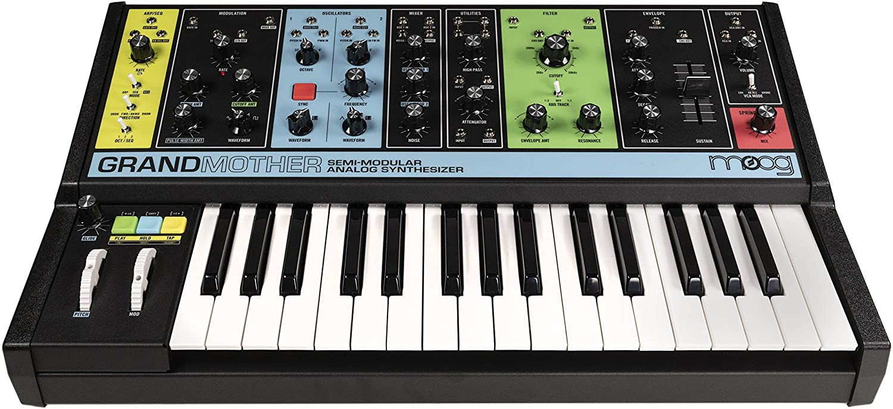
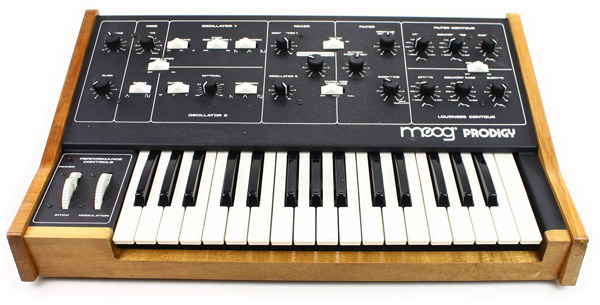
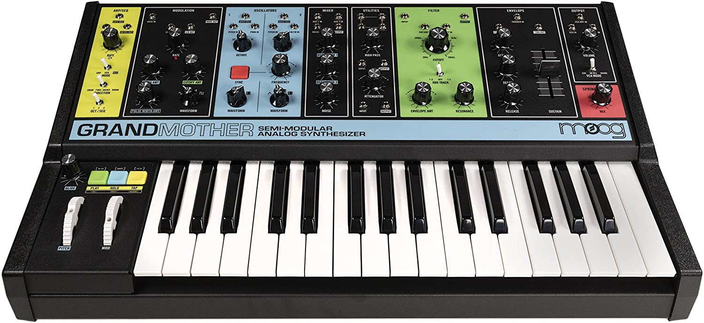
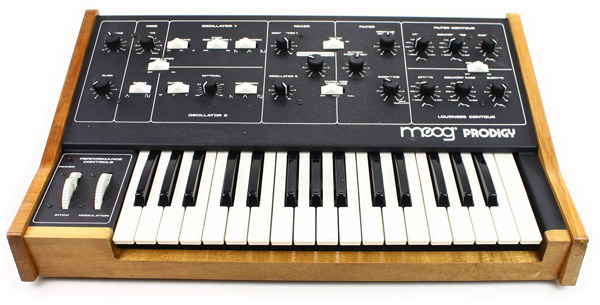

The Moog synthesizer (pronounced MOHG) is a modular synthesizer developed by the American engineer Robert Moog. Moog debuted it in 1964, and Moog's company R. A. Moog Co. (later known as Moog Music) produced numerous models from 1965 to 1980.[1] It was the first commercial synthesizer, and is credited with creating the analog synthesizer as it is known today.
An early use in rock music came with the 1967 Monkees album Pisces, Aquarius, Capricorn & Jones Ltd.[8] In 1969, George Harrison of the Beatles released an album of Moog recordings, Electronic Sound, and that year the Moog appeared on the Beatles album Abbey Road on tracks including "Because", "Here Comes the Sun" and "Maxwell's Silver Hammer".[8] Other rock bands who adopted the Moog include the Doors, the Grateful Dead, and the Rolling Stones.[3] It was also adopted by jazz musicians including Herbie Hancock, Jan Hammer and Sun Ra.[8]